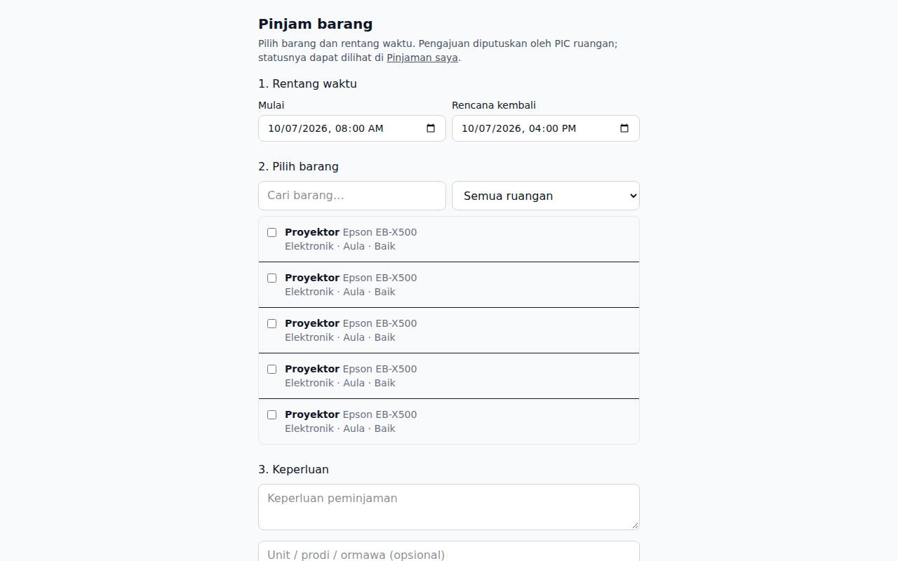
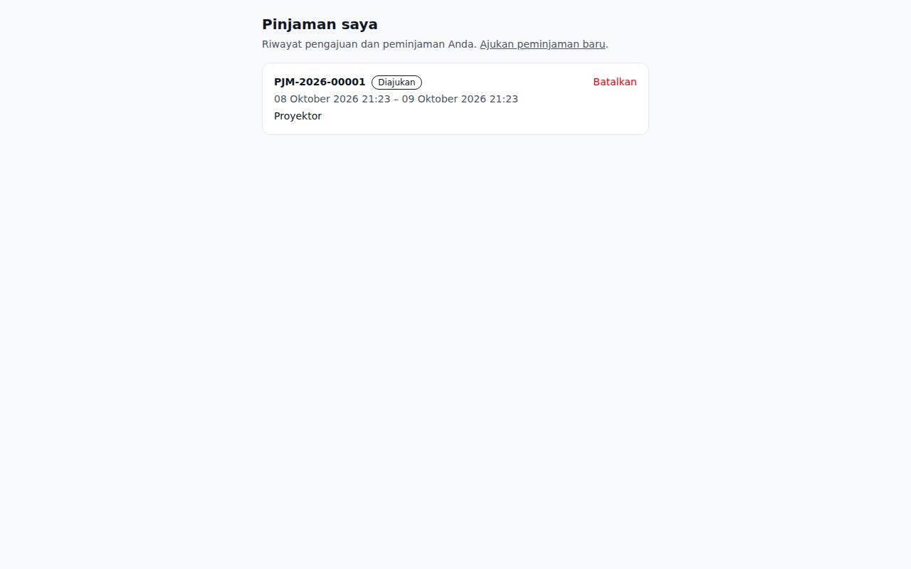

1. Masuk
Masuk di halaman login memakai surel @unsil.ac.id. Setelah berhasil Anda langsung diarahkan ke halaman Pinjam barang.

2. Mengajukan peminjaman
- Tentukan rentang waktu (mulai dan rencana kembali; maksimal 14 hari), cari dan centang barang yang tersedia, isi keperluan dan unit/prodi/ormawa, lalu kirim.
- Barang yang sedang dipinjam, dalam perbaikan, atau rusak berat tidak dapat dipilih. Satu pengajuan hanya untuk satu ruangan.
- Bila rentang waktu bentrok dengan peminjaman lain, pengajuan ditolak dengan alasan "tidak tersedia".

3. Memantau pinjaman
- Buka Pinjaman saya untuk melihat status: diajukan → disetujui → dipinjam → dikembalikan (atau ditolak/dibatalkan). Anda menerima notifikasi (lonceng/surel) saat PIC memutuskan. Pengajuan yang belum diputuskan dapat dibatalkan.
- Barang diambil dan dikembalikan kepada PIC ruangan sesuai jadwal; keterlambatan dihitung otomatis dan diingatkan.
